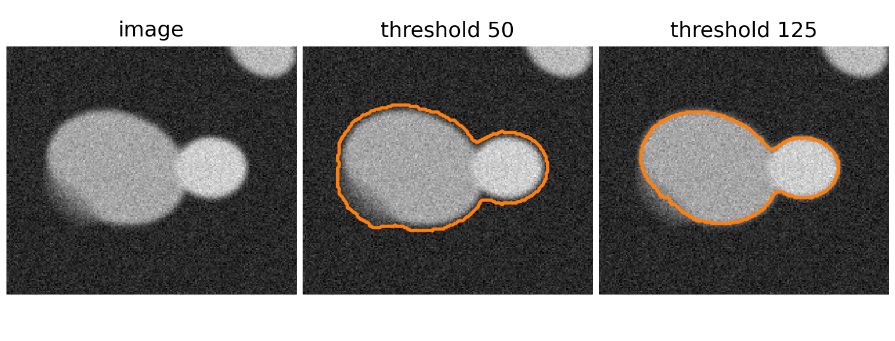
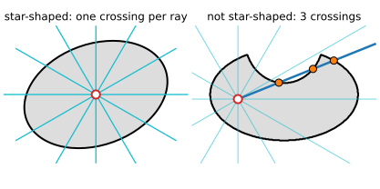
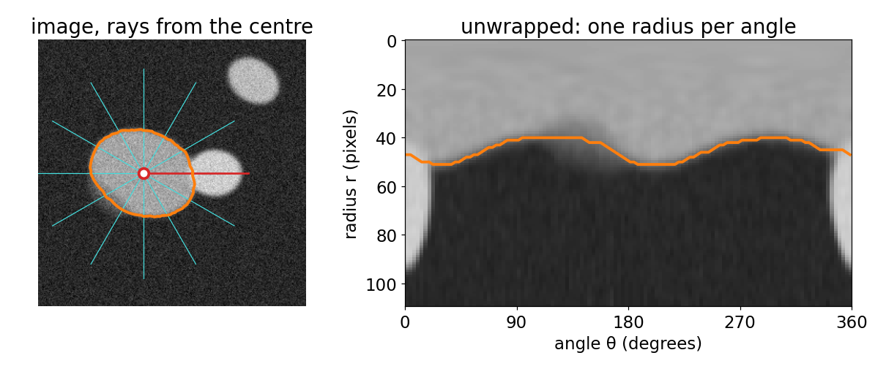
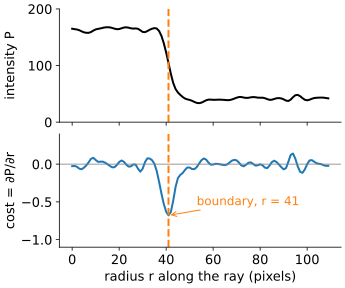
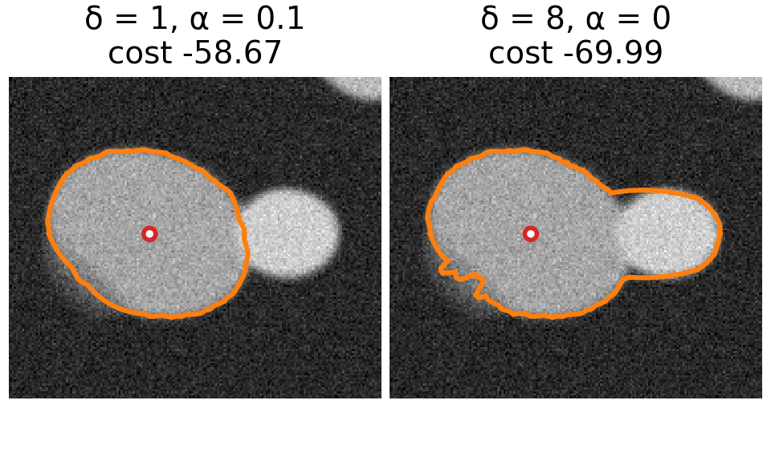
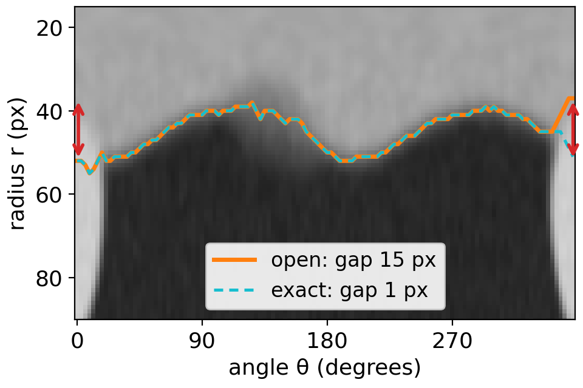
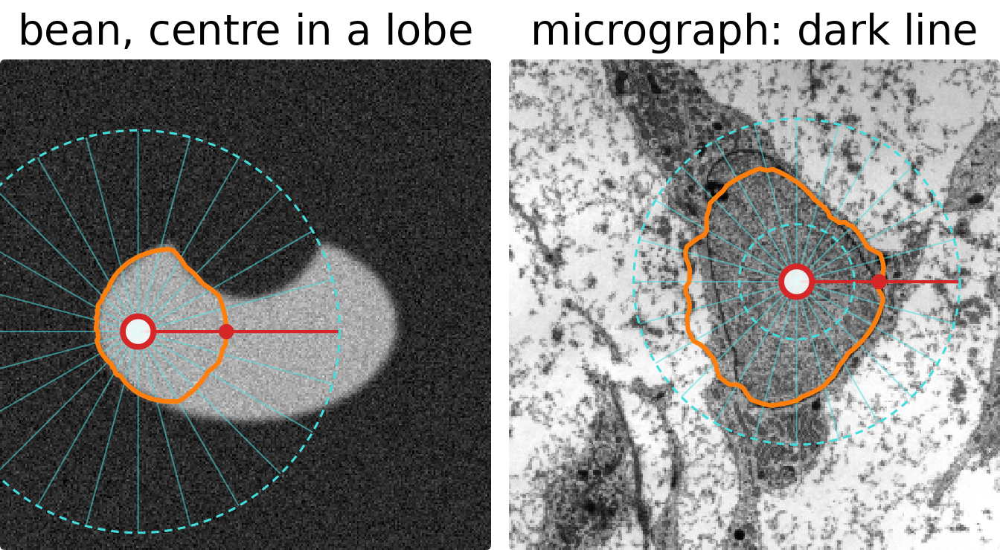
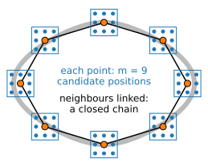

Last unit: the cheapest path from the top to the bottom of a cost image, exactly, by filling a table row by row. Today the same table finds a closed boundary around a nucleus.
Slides titled The math give the formulas and proofs; the ideas are complete without them.
A fluorescent nucleus, blurred, noisy, with a weak part of its boundary and a brighter neighbour touching it.

An object is star-shaped around a centre c if every ray from c leaves the object exactly once.
Not star-shaped: a bean seen from a point in one of its lobes, a dumbbell, a cell with long protrusions. We come back to them.


Sample the image along K rays at radii 0, 1, 2, \dots The rays become columns: angle across, radius down. The circle-like boundary becomes a path from left to right, one radius per column.
Centre c = (c_x, c_y), angles \theta_k = 2\pi k / K, radii r = 0, 1, \dots, R-1:
P(k, r) = I\big(c_x + r\cos\theta_k,\ c_y + r\sin\theta_k\big).
The sample point is not a pixel centre, so I is read by bilinear interpolation (the inverse mapping of the Images unit): with x = x_0 + f_x, y = y_0 + f_y, 0 \le f_x, f_y < 1,
I(x, y) = (1 - f_y)\big[(1-f_x) I_{x_0, y_0} + f_x I_{x_0+1, y_0}\big] + f_y\big[(1-f_x) I_{x_0, y_1} + f_x I_{x_0+1, y_1}\big],\quad y_1 = y_0 + 1.
The y-axis points down, so \theta increases clockwise on the screen. Mapping back: a path r_k is the closed polygon c + r_k(\cos\theta_k, \sin\theta_k).
Along a ray, a bright nucleus on a dark background goes bright → dark at the boundary: the intensity drops. Use the radial derivative \partial P / \partial r:

The sign selects the edge we want. A plain gradient magnitude cannot tell the outer edge of the nucleus from the inner edge of a brighter neighbour; the radial derivative can. Smooth the image a little first (a Gaussian, as in the Filtering unit), or the noise dominates the derivative.
Without a limit, the path picks the best edge on every ray independently, and jumps between edges (and noise).

This is the previous unit turned sideways: the angles are the stages (rows of the table), the radii are the states (columns), the steps go up to \delta columns sideways, with a penalty.
Note: \delta is per angle step. With more angles (K larger) the same \delta allows a steeper boundary.
Cost C(k, r) for angle k = 0, \dots, K-1 and radius r \in [r_{\min}, r_{\max}]:
M(0, r) = C(0, r), \qquad M(k, r) = C(k, r) + \min_{|d| \le \delta} \big(M(k-1, r+d) + \alpha |d|\big).
The best open path ends at \arg\min_r M(K-1, r) and is read off by backtracking. Work: (2\delta + 1) candidates per cell, O(K R \delta) in total: for K = 360, R = 100, \delta = 3 about 250 000 operations.
The energy that is minimised is
E(r_0, \dots, r_{K-1}) = \sum_k C(k, r_k) + \alpha \sum_{k} |r_{k} - r_{k-1}|, \qquad |r_k - r_{k-1}| \le \delta,
a data term plus a smoothness term, as on the graph-cut day, but over a chain.
Angle 0° and angle 360° are the same ray, so the path must satisfy |r_0 - r_{K-1}| \le \delta too. The table of the previous slide does not know that.

Every closed path has some start radius s = r_0. For fixed s, set M_s(0, r) = C(0, r) if r = s and \infty otherwise, run the recursion, and close:
E^*_s = \min_{|r - s| \le \delta} \big(M_s(K-1, r) + \alpha|r - s|\big).
E^*_s is the cheapest closed path that starts at s (the principle of optimality, with the extra closing step). The best closed path is \min_s E^*_s. Work: R runs, O(K R^2 \delta): for K = 360, R = 100, \delta = 3 about 25 million operations, a few tens of milliseconds.
Faster exact methods exist (branch and bound over the start radius, Appleton & Sun 2003). Unrolling costs only 3 runs, but a counterexample where its middle copy does not close is in the exercise.

Micrograph: transmission electron micrograph of a mesenchymal stem cell, Robert M. Hunt, CC BY 3.0, via Wikimedia Commons.
Remedies: a centre from a seed click or from the peak of the distance transform (morphology day) of a rough mask; an annulus r_{\min} \le r \le r_{\max}; iterate (new centre = centroid of the result, then run again); the right polarity.
Three ways to find a nucleus boundary, three kinds of guarantee:
| Method | Optimises | Guarantee |
|---|---|---|
| Graph cuts (graph-cut day) | a 2D labelling, binary, submodular | global minimum |
| Snakes, level sets (previous days) | a curve, by local descent | a local minimum near the start |
| Polar DP (today) | one radius per angle | global minimum among star-shaped curves around c |
Polar DP needs no starting curve, only a centre, and is never trapped by a nearby weak edge. The price is the restriction: star-shaped around a known centre.
Recall from the snakes day: a snake is a closed curve of n points v_i with an energy of an internal part (elasticity, rigidity) and an image part. Gradient descent moves it to a nearby local minimum.
DP version (Amini, Weymouth & Jain 1990): let each point move only within a small window of m candidate positions around its current place.

Candidate positions v_i \in W_i (|W_i| = m). First-order energy
E = \sum_i \big[E_{\text{img}}(v_i) + \alpha\,|v_i - v_{i-1}|^2\big]
is a chain: M_i(v) = E_{\text{img}}(v) + \min_{u \in W_{i-1}} \big(M_{i-1}(u) + \alpha|v - u|^2\big), m^2 work per point, O(nm^2) in total (times m for the exact closure, as before).
With the bending term \beta\,|v_{i+1} - 2v_i + v_{i-1}|^2 (as on the snakes day) each term involves three points. Use the pair (v_{i-1}, v_i) as the state: M_i(v_{i-1}, v_i) = \min_{v_{i-2}} \big(M_{i-1}(v_{i-2}, v_{i-1}) + \dots\big): m^2 states, m candidates each, O(nm^3).